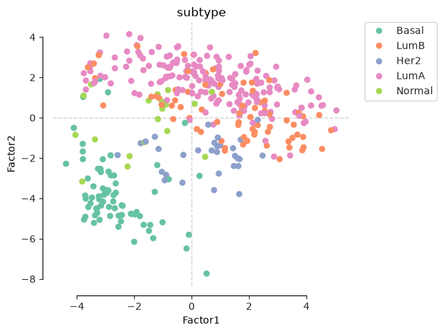
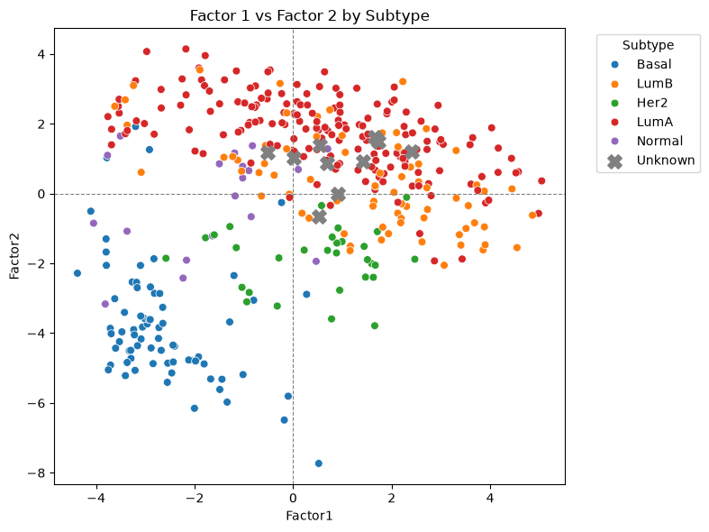
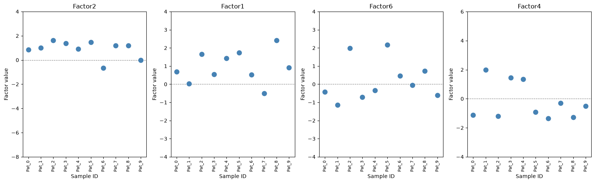
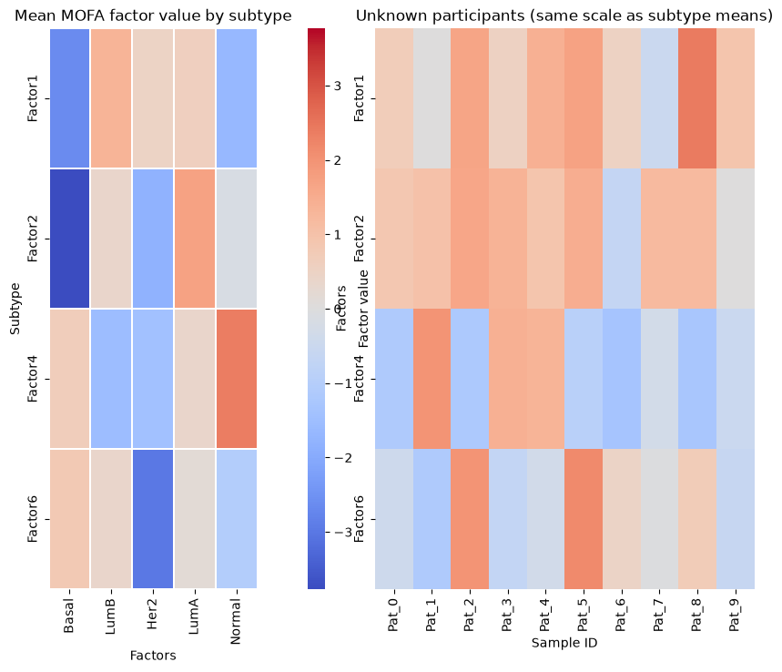
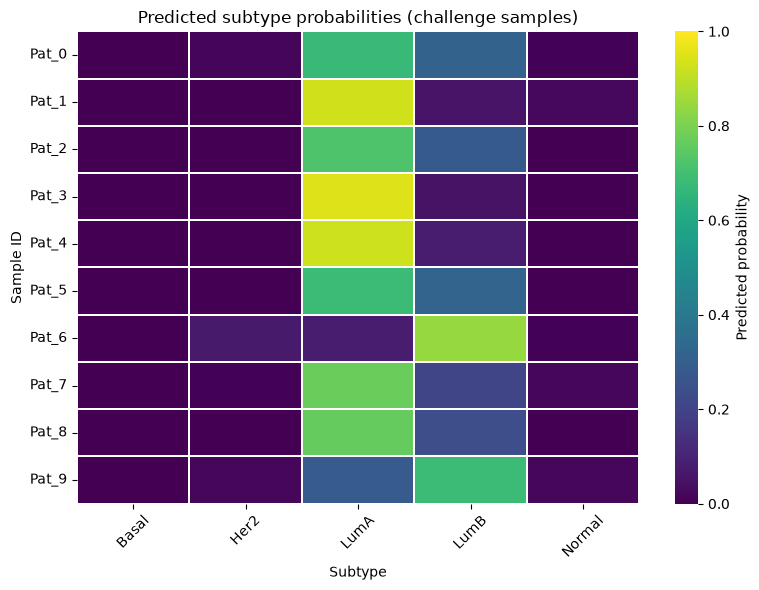

Session 4#
Mini challenge: the Hail Mary gene hunt#
You are Dr. Grace Ryland, and humanity’s last, most fragile plan is riding on you. You are the scientist aboard the Hail Mary — the ship Project Hail Mary sent out to figure out why the sun is dying, and why it might be about to take every other star in a 50-lightyear bubble down with it.
Somewhere along the way you picked up an unlikely lab partner: Rocky, an alien engineer with five arms, a knack for improvising equipment out of scrap, and absolutely no sense of how fragile human sample-labelling systems are. During a rough bit of turbulence, Rocky knocked over a rack of 10 patient samples. The labels are gone. The DNA, RNA and protein are all still there — you just don’t know whose is whose anymore.
This is, to put it mildly, a problem. Back on Earth, these 10 patients are relying on this exact data. And thankfully, you’re not starting from nothing: you have each sample’s full multi-omics profile, and you have the clinical notes you scribbled down before the accident — the “amaze, amaze, amaze, scientific notes” that are about to earn their keep.
Use the patient histories below, the molecular signatures locked in each sample, and every trick you’ve picked up so far in this workshop to re-identify all 10 samples. One piece of good news from earlier statistics work: you already know the mislabelled batch is exactly 5 Luminal A and 5 Luminal B subtypes — so whatever you land on, it should split 5/5.
Godspeed, Dr. Ryland. Earth is listening.
How this notebook is organised#
Setup — environment check + imports
Load data — the 10 mislabelled (“challenge”) samples, the labelled training cohort, and a pretrained MOFA multi-omics model
Project the challenge samples into the MOFA factor space learned from the training cohort
Visualise the factor space to see where the unknown samples fall relative to known subtypes
Classify each unknown sample as Luminal A / Luminal B using a simple logistic regression on the factors
Explain each prediction by finding the genes driving each unknown sample’s factor values, then linking those genes to diseases via a knowledge graph — to match against the clinical notes below
Answer — fill in your final
Pat_i -> TCGA-xxxxmapping
Patient clinical notes#
Prior to the accident, these are the disease/phenotype notes you recorded for each of the 10 patients whose samples are now mislabelled Pat_0 … Pat_9. You’ll use these — together with the molecular evidence gathered below — to work out which Pat_i is which TCGA-xxxx.
TCGA-EW-A6S9 — Presented with invasive breast carcinoma. Immunohistochemistry came back HER2-negative, but strongly positive for both estrogen and progesterone receptors, marking this out as a clearly hormone-receptor-driven tumor.
TCGA-A2-A0EP — Biopsy of a breast mass confirmed adenocarcinoma of ductal origin — glandular architecture arising from the mammary ducts, the most textbook presentation of the disease.
TCGA-E2-A1IG — A patient managing both asthma and Parkinson disease for several years, whose case took a sharp turn with the diagnosis of breast angiosarcoma, a rare and fast-growing vascular malignancy rather than a typical epithelial breast cancer.
TCGA-AQ-A1H3 — Decades of type 1 diabetes had already taken a toll by the time she came in: coronary artery disease and chronic kidney disease, the two classic downstream complications of long-standing diabetic vascular damage.
TCGA-AC-A2FE — Type 2 diabetes was already on the chart when breast angiosarcoma was diagnosed — a second, unrelated but noteworthy vascular malignancy layered onto an existing metabolic condition.
TCGA-A2-A1FX — Screening first picked up lobular neoplasia; further workup of a separate area of the breast then revealed medullary carcinoma, a less common but relatively well-differentiated histological subtype.
TCGA-A2-A4S3 — Living with multiple sclerosis, this patient went on to develop two independent primary cancers around the same time: an adenocarcinoma of the lung and a colorectal cancer, an unusually heavy cancer burden for one case.
TCGA-C8-A26W — Chronic kidney disease was a long-standing issue by the time gastric carcinoma appeared, and the picture was complicated further still by a later diagnosis of acute myeloid leukemia — three serious conditions converging in one patient.
TCGA-AR-A2LK — A palpable lump led to biopsy and a diagnosis of ductal adenocarcinoma of the breast, the same core histology as the most common form of breast adenocarcinoma.
TCGA-AO-A0JD — Type 2 diabetes was a pre-existing condition when this patient was diagnosed with breast angiosarcoma, a rare vascular tumor of the breast rather than the far more common ductal or lobular types.
1. Setup#
# Quick environment check (optional).
# Confirms the notebook is running on the expected machine / Python env / folder,
# since path or environment mismatches are a common source of confusing errors.
import socket
import os
import sys
print("Host:", socket.gethostname())
print("Python:", sys.executable)
print("Working dir:", os.getcwd())
Host: kh066
Python: /home/bryan/miniconda3/envs/eccb2026/bin/python
Working dir: /work/gr-fe/bryan/ECCB2026_TEST/sessions/session-4-kg-query-mini-challenge
# ── Standard library ─────────────────────────────────────────────────────────
from pathlib import Path
import pickle
# ── Third-party ───────────────────────────────────────────────────────────────
import numpy as np
import pandas as pd
import matplotlib.pyplot as plt
import seaborn as sns
import networkx as nx
from matplotlib.colors import TwoSlopeNorm
from IPython.display import display
from sklearn.linear_model import LogisticRegression
# Extra metrics you may want once you've settled on a final answer and want to
# sanity-check a prediction against a partially-known label, or during model
# development on the labelled training cohort:
from sklearn.metrics import accuracy_score, balanced_accuracy_score, classification_report
# MOFA (Multi-Omics Factor Analysis): mofax is used to *read* a pretrained model.
# mofapy2 is only needed if you want to *train* a MOFA model from scratch, which
# isn't required for this challenge (a pretrained model is provided below).
import mofax as mfx
# ── Custom helpers for this workshop (see s4_helpers.py) ───────────────────────
from s4_helpers import (
load_omics,
evaluate_predictions,
load_kg,
print_graph_info,
map_genes_to_kg,
diseases_for_genes,
)
# ── Reproducibility ───────────────────────────────────────────────────────────
RANDOM_STATE = 42
2. Load data#
We need three things:
The 10 mislabelled “challenge” samples (
Pat_0…Pat_9) — these are the ones we’re re-identifying.The labelled training cohort used to train the MOFA model, plus the train/test patient ID split that was used at training time.
The pretrained MOFA model itself, so we can project the challenge samples into the same factor space.
# The 10 mislabelled samples for this challenge.
DATA_DIR = Path(".")
X_challenge_omics, y_challenge = load_omics(
DATA_DIR,
omic_filename="challenge_omics",
omic_keys=["transcriptomics", "proteomics", "methylation"],
)
# The TCGA IDs Rocky mixed up (order not meaningful — this is what we're solving for).
missing_ids = [
"TCGA-EW-A6S9", "TCGA-A2-A0EP", "TCGA-E2-A1IG",
"TCGA-AQ-A1H3", "TCGA-AC-A2FE", "TCGA-A2-A1FX",
"TCGA-A2-A4S3", "TCGA-C8-A26W", "TCGA-AR-A2LK", "TCGA-AO-A0JD",
]
pat_ids = [f"Pat_{i}" for i in range(10)]
# The true subtype of each challenge sample is unknown by construction — that's
# half of what we're inferring (the other half is the exact patient identity).
y_challenge["subtype"] = ["Unknown" for _ in range(10)]
y_challenge = y_challenge[["subtype"]]
# Relabel the challenge cohort with anonymised Pat_0..Pat_9 IDs.
for view in X_challenge_omics:
X_challenge_omics[view].index = pat_ids
y_challenge.index = pat_ids
X_challenge_omics
Omic view dimensions:
transcriptomics: 10 patients x 29995 features
proteomics : 10 patients x 464 features
methylation : 10 patients x 200000 features
Subtype counts:
subtype
Unknown 10
Name: count, dtype: int64
{'transcriptomics': ENSG00000000003.15 ENSG00000000005.6 ENSG00000000419.13 \
Pat_0 10.206609 3.890222 10.963447
Pat_1 11.227947 7.885052 10.747011
Pat_2 10.858597 3.622629 10.543180
Pat_3 11.418415 6.649170 10.675950
Pat_4 11.639118 7.683469 10.614152
Pat_5 10.006381 3.991210 10.967056
Pat_6 11.320906 4.597212 11.209474
Pat_7 11.521549 4.382121 11.129100
Pat_8 11.692278 4.079725 11.140742
Pat_9 12.186842 4.716691 11.855058
ENSG00000000457.14 ENSG00000000460.17 ENSG00000000938.13 \
Pat_0 9.960213 8.783081 7.883629
Pat_1 11.352407 8.963408 11.828274
Pat_2 10.480666 8.805772 8.354700
Pat_3 11.772228 9.739870 9.070792
Pat_4 10.360072 8.960729 9.935186
Pat_5 9.476851 8.826529 8.802416
Pat_6 10.049028 9.896462 9.213614
Pat_7 10.304102 9.837964 8.720828
Pat_8 10.533073 10.023556 8.988475
Pat_9 10.738790 10.903126 8.964495
ENSG00000000971.16 ENSG00000001036.14 ENSG00000001084.13 \
Pat_0 11.083770 10.744436 11.751679
Pat_1 12.929817 11.243190 11.040297
Pat_2 11.695405 10.179517 10.889103
Pat_3 12.100870 10.894993 9.977176
Pat_4 11.250770 11.529095 10.553126
Pat_5 11.684284 11.000672 11.628035
Pat_6 10.423992 12.156724 11.485138
Pat_7 11.510676 12.033402 10.843561
Pat_8 11.263677 10.980872 11.134081
Pat_9 9.823592 13.432973 11.613547
ENSG00000001167.14 ... ENSG00000288611.1 ENSG00000288612.1 \
Pat_0 11.388343 ... 4.450666 5.667865
Pat_1 10.466207 ... 2.843467 6.377397
Pat_2 11.436503 ... 4.163000 5.356899
Pat_3 11.895307 ... 3.298848 5.391283
Pat_4 11.372468 ... 2.843467 5.553009
Pat_5 11.608577 ... 3.287055 6.508915
Pat_6 11.997321 ... 5.576287 6.716968
Pat_7 11.658691 ... 3.471029 6.382145
Pat_8 11.812687 ... 3.518504 5.361268
Pat_9 12.380097 ... 4.099344 4.571069
ENSG00000288638.1 ENSG00000288648.1 ENSG00000288657.1 \
Pat_0 2.843467 2.843467 3.375382
Pat_1 2.843467 3.345657 2.843467
Pat_2 2.843467 2.843467 3.397723
Pat_3 2.843467 3.298848 2.843467
Pat_4 2.843467 3.329320 2.843467
Pat_5 2.843467 2.843467 2.843467
Pat_6 2.843467 2.843467 2.843467
Pat_7 2.843467 2.843467 3.471029
Pat_8 2.843467 2.843467 2.843467
Pat_9 2.843467 3.419187 2.843467
ENSG00000288658.1 ENSG00000288663.1 ENSG00000288670.1 \
Pat_0 3.591567 4.375290 8.897982
Pat_1 5.122605 5.929506 7.922134
Pat_2 3.622629 4.512358 9.500332
Pat_3 3.625866 5.010104 8.810702
Pat_4 4.768499 4.901473 8.606419
Pat_5 3.468372 6.272242 8.215869
Pat_6 4.937380 6.139969 8.373386
Pat_7 3.724245 5.185608 8.314728
Pat_8 3.666569 5.240143 9.601401
Pat_9 3.828054 4.099344 7.871598
ENSG00000288674.1 ENSG00000288675.1
Pat_0 4.207402 5.903832
Pat_1 4.776614 5.675877
Pat_2 3.792194 5.234692
Pat_3 4.234930 4.518756
Pat_4 4.509409 5.603773
Pat_5 4.201095 5.387085
Pat_6 3.759852 4.860542
Pat_7 3.824557 5.467033
Pat_8 4.489482 4.489482
Pat_9 3.419187 5.124520
[10 rows x 29995 columns],
'proteomics': 1433BETA 1433EPSILON 1433ZETA 4EBP1 4EBP1_pS65 4EBP1_pT37T46 \
Pat_0 0.209990 -0.075390 0.371980 -0.224730 -0.485060 -0.692580
Pat_1 0.312400 0.030429 0.253340 -0.611520 -0.201840 0.671530
Pat_2 0.127790 -0.070532 -0.027055 -0.582010 -0.450870 -0.473950
Pat_3 0.672860 0.454690 0.690000 -0.435830 -0.677050 -0.216300
Pat_4 0.151560 0.191260 0.116100 0.007940 -0.475930 0.386940
Pat_5 -0.145800 0.105943 0.923275 0.579005 -0.479165 -0.398805
Pat_6 0.471200 0.135960 0.229710 0.421070 -0.820150 -0.588590
Pat_7 0.266130 0.400270 -0.676650 -0.516900 -0.331410 0.146250
Pat_8 -0.064925 -0.012983 -0.019147 0.122100 -0.503420 0.400560
Pat_9 0.179010 -0.000011 -0.305770 0.387160 -0.403100 -0.892310
4EBP1_pT70 53BP1 ACC_pS79 ACC1 ... XPF XRCC1 \
Pat_0 -0.237400 -0.067915 0.081168 0.007453 ... 0.260623 -0.099892
Pat_1 -0.490780 -0.814960 0.529520 0.870960 ... 0.298706 -0.115650
Pat_2 -0.318360 0.360740 1.002400 0.899580 ... 0.620847 0.350880
Pat_3 -0.325280 -1.454200 2.059000 0.801960 ... 0.635439 -0.797760
Pat_4 -0.402460 -0.066013 0.806990 0.031855 ... 0.325157 -0.015553
Pat_5 -0.006398 -0.010776 0.126345 0.721685 ... -0.006203 -0.149885
Pat_6 0.402940 -0.669310 -0.067353 -0.189610 ... 0.559783 0.345610
Pat_7 0.178840 -0.865140 -0.086904 -0.452800 ... 0.196953 0.150710
Pat_8 -0.245610 -0.295440 0.246430 0.367050 ... -0.084701 0.126790
Pat_9 -0.103780 -0.602700 -0.336820 0.341820 ... -0.226228 -0.024386
YAP YAP_pS127 YB1 YB1_pS102 YTHDF2 YTHDF3 ZAP-70 \
Pat_0 -0.287960 -0.456050 -0.359370 -0.057382 -0.435499 -0.672054 0.516419
Pat_1 0.049778 0.223490 0.037169 0.000000 -0.597347 -1.673852 -0.829929
Pat_2 -0.272050 -0.422110 0.269720 -0.268640 0.450075 -0.159570 -0.370457
Pat_3 1.320500 1.670100 -0.531290 0.322170 -1.465223 -0.971948 -0.591835
Pat_4 -0.154470 -0.104590 0.326420 -0.141670 -0.160695 0.429300 1.105883
Pat_5 -0.485700 -1.128265 0.203920 -0.249505 0.249155 0.477140 -0.294727
Pat_6 0.249630 -0.449320 -0.368930 0.314880 -0.911570 -0.257785 1.340228
Pat_7 0.373290 0.214090 -0.328940 -0.029406 -1.517599 -1.559424 0.885328
Pat_8 -0.375900 -0.628490 -0.159960 -0.422880 0.027947 0.742192 -0.973856
Pat_9 -0.339030 -0.793460 -0.252160 0.010017 0.671120 0.392285 -0.176342
ZEB1
Pat_0 0.364914
Pat_1 0.282237
Pat_2 0.434968
Pat_3 0.912490
Pat_4 0.431498
Pat_5 -0.221702
Pat_6 0.511333
Pat_7 0.671174
Pat_8 0.074150
Pat_9 -0.122987
[10 rows x 464 columns],
'methylation': cg11738485 cg01893212 cg23179456 cg12466610 cg22473620 cg15690342 \
Pat_0 0.036465 0.459944 0.765009 0.523401 0.666596 0.171290
Pat_1 0.642683 0.366179 0.147451 0.082516 0.234550 0.329291
Pat_2 0.587153 0.808454 0.802197 0.598610 0.793824 0.825494
Pat_3 0.559811 0.694687 0.661540 0.230455 0.499805 0.755860
Pat_4 0.984174 0.585158 0.581683 0.290122 0.598232 0.629066
Pat_5 0.015636 0.750984 0.780966 0.469563 0.737902 0.572635
Pat_6 0.029568 0.030172 0.660712 0.548529 0.721839 0.184347
Pat_7 0.727794 0.039441 0.030866 0.971210 0.345076 0.237567
Pat_8 0.981246 0.829965 0.660667 0.055368 0.041200 0.849246
Pat_9 0.680905 0.046090 0.837534 0.614237 0.798068 0.886255
cg02467990 cg21885317 cg20399616 cg22831607 ... cg03082813 \
Pat_0 0.309456 0.087059 0.146893 0.304569 ... 0.099009
Pat_1 0.343183 0.929976 0.146072 0.168229 ... 0.111423
Pat_2 0.767110 0.951831 0.768201 0.042451 ... 0.047717
Pat_3 0.643704 0.192525 0.652058 0.669029 ... 0.072981
Pat_4 0.509020 0.905908 0.616243 0.629752 ... 0.086513
Pat_5 0.714676 0.330090 0.758003 0.295251 ... 0.084584
Pat_6 0.021985 0.937415 0.039530 0.585501 ... 0.088012
Pat_7 0.040871 0.170520 0.099211 0.062540 ... 0.048544
Pat_8 0.812736 0.695391 0.802597 0.868684 ... 0.097715
Pat_9 0.041928 0.931980 0.742047 0.672269 ... 0.047196
cg13744910 cg09550558 cg09395540 cg13222853 cg06575013 cg23123972 \
Pat_0 0.964663 0.122532 0.922226 0.869302 0.093457 0.851539
Pat_1 0.972984 0.069577 0.948352 0.883429 0.126899 0.910045
Pat_2 0.965976 0.064062 0.821157 0.910605 0.078588 0.926255
Pat_3 0.973397 0.070123 0.937828 0.911747 0.095471 0.893391
Pat_4 0.971771 0.066935 0.938623 0.896895 0.114243 0.882909
Pat_5 0.964760 0.064851 0.873053 0.930288 0.093407 0.912283
Pat_6 0.958149 0.087123 0.917065 0.863395 0.097908 0.848616
Pat_7 0.975608 0.079897 0.934193 0.871475 0.149388 0.933717
Pat_8 0.976676 0.079897 0.829877 0.882533 0.105870 0.885309
Pat_9 0.976905 0.071415 0.904568 0.928623 0.080946 0.671952
cg10507099 cg03538345 cg14015726
Pat_0 0.019959 0.166893 0.941172
Pat_1 0.017771 0.127076 0.944468
Pat_2 0.017049 0.111346 0.953182
Pat_3 0.018662 0.104881 0.918535
Pat_4 0.016234 0.087803 0.947652
Pat_5 0.020630 0.069685 0.933060
Pat_6 0.021112 0.094935 0.812604
Pat_7 0.022462 0.163373 0.943986
Pat_8 0.017831 0.147168 0.934284
Pat_9 0.016314 0.088723 0.943192
[10 rows x 200000 columns]}
# The labelled training cohort (TCGA-BRCA) that the MOFA model below was trained on.
TRAIN_DATA_DIR = Path("../../data_tmp/TCGA-BRCA/")
X_omics, y = load_omics(
TRAIN_DATA_DIR,
omic_filename="omics",
omic_keys=["transcriptomics", "proteomics", "methylation"],
)
with open(TRAIN_DATA_DIR / "patient_splits.pkl", "rb") as f:
splits = pickle.load(f)
train_ids = splits["train_ids"]
test_ids = splits["test_ids"]
# Split the labels using the same patient IDs used for the omics data.
y_train = y.loc[train_ids]
y_test = y.loc[test_ids]
Omic view dimensions:
transcriptomics: 500 patients x 29995 features
proteomics : 500 patients x 464 features
methylation : 500 patients x 200000 features
Subtype counts:
paper_BRCA_Subtype_PAM50
LumA 237
LumB 100
Basal 97
Her2 41
Normal 25
Name: count, dtype: int64
# Load the pretrained MOFA model.
mofa_model_mfx = mfx.mofa_model("mofa_pretrained.hdf5")
print(mofa_model_mfx) # Model overview
print(mofa_model_mfx.shape) # (n_samples, n_factors)
# Extract key components.
factors = mofa_model_mfx.get_factors(df=True) # Factor/latent space values
weights = mofa_model_mfx.get_weights(df=True) # Feature weights/loadings
var_exp = mofa_model_mfx.get_variance_explained() # R^2 per factor per view
# NOTE: the exact factor-name format (e.g. "Factor1" vs "Factor 1") depends on
# your mofax version. Check this before relying on either format later in the
# notebook:
print("Factor column names look like:", list(factors.columns[:3]))
MOFA+ model: mofa pretrained
Samples (cells): 375
Features: 4464
Groups: TCGA-BRCA_train (375)
Views: methylation (2000), proteomics (464), transcriptomics (2000)
Factors: 10
Expectations: W, Z
(375, 4464)
Factor column names look like: ['Factor1', 'Factor2', 'Factor3']
3. Project the challenge samples into the MOFA factor space#
MOFA was fit on the training cohort only. To place the 10 unknown challenge samples on the same latent axes, we need to project them using the feature weights the model already learned — without ever touching the (unknown) labels.
# Restrict each omics view to the features MOFA actually used (its most-variable,
# training-selected feature set), so train and test matrices line up column-for-column.
X_train_raw = {name: X.loc[train_ids] for name, X in X_omics.items()}
X_test_raw = {name: X for name, X in X_challenge_omics.items()}
features_in_mofa = set(weights.index)
X_train_omics = {}
X_test_omics = {}
for name, X_train_view in X_train_raw.items():
selected_features = list(features_in_mofa & set(X_train_view.columns))
X_train_omics[name] = X_train_view.loc[:, selected_features]
X_test_omics[name] = X_test_raw[name].loc[:, selected_features]
print("Feature counts after filtering to MOFA's feature set:")
for name in X_omics:
print(
f" {name:15s}: {X_omics[name].shape[1]:6d} original -> "
f"{X_train_omics[name].shape[1]:6d} used by MOFA"
)
Feature counts after filtering to MOFA's feature set:
transcriptomics: 29995 original -> 2000 used by MOFA
proteomics : 464 original -> 464 used by MOFA
methylation : 200000 original -> 2000 used by MOFA
def project_test_patients_to_mofa_factors(model, X_train_by_view, X_test_by_view, train_factors, view_names):
"""Project held-out patients into the fixed MOFA factor space.
The projection uses MOFA weights learned from training patients. To keep
train and test factor values comparable, preprocessing and calibration are
fit on training patients only and then applied unchanged to test patients
(test labels are never used anywhere in this function).
"""
factor_columns = train_factors.columns.astype(str).tolist()
projected_test_by_view = []
for view_name in view_names:
# W is the learned feature x factor weight matrix for this omics view.
view_weights = model.get_weights(views=view_name, df=True)
view_weights.columns = view_weights.columns.astype(str)
view_weights = view_weights.reindex(columns=factor_columns)
# Use only features present in the trained weights AND both train/test matrices.
common_features = view_weights.index.intersection(X_train_by_view[view_name].columns)
common_features = common_features.intersection(X_test_by_view[view_name].columns)
view_weights = view_weights.loc[common_features]
X_train_view = X_train_by_view[view_name].loc[:, common_features].astype(float)
X_test_view = X_test_by_view[view_name].loc[:, common_features].astype(float)
X_train_view.index = X_train_view.index.astype(str)
X_test_view.index = X_test_view.index.astype(str)
# Learn centering/scaling on training patients only, then apply it to test patients.
train_mean = X_train_view.mean(axis=0)
train_std = X_train_view.std(axis=0, ddof=0).replace(0, 1)
X_train_scaled = (X_train_view - train_mean) / train_std
X_test_scaled = (X_test_view - train_mean) / train_std
# Project X into the fixed MOFA weight space via the pseudo-inverse of W.
raw_train_projection = X_train_scaled.to_numpy() @ np.linalg.pinv(view_weights.to_numpy()).T
raw_test_projection = X_test_scaled.to_numpy() @ np.linalg.pinv(view_weights.to_numpy()).T
# Calibrate the raw projection to the factor scale returned by the trained
# MOFA model. Fitted on training patients only; test labels are never used.
train_design = np.column_stack([raw_train_projection, np.ones(raw_train_projection.shape[0])])
test_design = np.column_stack([raw_test_projection, np.ones(raw_test_projection.shape[0])])
train_target = train_factors.loc[X_train_view.index, factor_columns].to_numpy()
calibration = np.linalg.lstsq(train_design, train_target, rcond=None)[0]
projected_values = test_design @ calibration
projected = pd.DataFrame(projected_values, index=X_test_view.index, columns=factor_columns)
projected_test_by_view.append(projected)
# Each view gives one projected factor table; average them since all views
# are available for every challenge sample here.
return sum(projected_test_by_view) / len(projected_test_by_view)
# Extract training-patient factor values straight from the fitted MOFA model.
train_factors_mfx = mofa_model_mfx.get_factors(df=True)
train_factors_mfx.index = train_factors_mfx.index.astype(str)
# Project the 10 held-out challenge patients into that same factor space.
test_factors_mfx = project_test_patients_to_mofa_factors(
mofa_model_mfx,
X_train_omics,
X_test_omics,
train_factors_mfx,
list(X_train_omics.keys()),
)
# Attach the known training subtypes to the model so mofax's built-in plots can
# colour training points by subtype.
mofa_sample_metadata = pd.DataFrame(index=train_factors_mfx.index)
mofa_sample_metadata["subtype"] = y_train.reindex(train_factors_mfx.index).values
mofa_model_mfx.samples_metadata = mofa_sample_metadata
4. Visualise the factor space#
# Built-in mofax scatter grid, training patients only, coloured by subtype.
mfx.plot_factors_scatter(
mofa_model_mfx,
x="Factor1",
y="Factor2",
group_label="subtype",
color="subtype",
zero_line_x=True,
zero_line_y=True,
ncols=3,
size=40,
alpha=1,
)
plt.show()

# Combine training (known subtype) and challenge (unknown subtype) factors into
# one long table we can reuse for every plot below.
plot_df = pd.concat([train_factors_mfx, test_factors_mfx])
subtypes_col = pd.concat([
y_train,
pd.Series(["Unknown"] * len(test_factors_mfx), index=test_factors_mfx.index),
])
plot_df["subtype"] = subtypes_col
plot_df
| Factor1 | Factor2 | Factor3 | Factor4 | Factor5 | Factor6 | Factor7 | Factor8 | Factor9 | Factor10 | subtype | |
|---|---|---|---|---|---|---|---|---|---|---|---|
| TCGA-S3-AA0Z | -2.677049 | -4.491632 | 1.438483 | -0.422795 | 0.741272 | 1.235917 | 1.497584 | -0.306961 | 0.952876 | -0.117106 | Basal |
| TCGA-E9-A1N6 | 0.180977 | -0.561914 | -3.574715 | -2.498562 | -3.337365 | -2.594017 | -1.536899 | 1.478458 | -0.399653 | 1.112885 | LumB |
| TCGA-C8-A26Y | -1.037958 | -2.685832 | 0.221065 | -2.129348 | -1.283929 | -3.698094 | -2.550864 | 3.238068 | 0.323258 | 0.714914 | Her2 |
| TCGA-A7-A0D9 | 0.757382 | -0.338205 | -1.839327 | 6.520308 | -4.192802 | 1.799493 | -0.594609 | 1.617057 | -4.788059 | 2.172852 | LumA |
| TCGA-A2-A0CT | 4.982207 | -0.566879 | 0.930730 | -0.789196 | -1.455145 | 2.251426 | 3.763444 | 1.592921 | 0.738021 | 0.874641 | LumA |
| ... | ... | ... | ... | ... | ... | ... | ... | ... | ... | ... | ... |
| Pat_5 | 1.732713 | 1.484934 | 0.798178 | -0.922396 | -0.938942 | 2.177108 | -1.136659 | 0.900399 | -0.561686 | -0.393969 | Unknown |
| Pat_6 | 0.525045 | -0.649719 | 0.079504 | -1.348195 | 1.465892 | 0.453576 | -1.885745 | 0.881061 | -0.181360 | 0.944625 | Unknown |
| Pat_7 | -0.511048 | 1.179021 | -1.281183 | -0.298532 | 0.825806 | -0.048020 | -1.702661 | -0.368831 | 0.132252 | 0.810454 | Unknown |
| Pat_8 | 2.410831 | 1.197439 | 1.041670 | -1.269500 | -0.668765 | 0.721102 | 0.172933 | -1.027378 | -0.076351 | 0.376981 | Unknown |
| Pat_9 | 0.916728 | 0.003875 | 0.923834 | -0.510366 | 0.090924 | -0.598543 | -1.956078 | 0.735629 | 0.040657 | -0.187265 | Unknown |
385 rows × 11 columns
fig, ax = plt.subplots(figsize=(8, 6))
# Split known vs unknown subtypes (handles both NaN and the literal 'Unknown' label).
known = plot_df[plot_df["subtype"].notna() & ~plot_df["subtype"].isin(["Unknown"])]
unknown = plot_df[plot_df["subtype"].isna() | plot_df["subtype"].isin(["Unknown"])]
# Known subtypes as coloured circles.
sns.scatterplot(data=known, x="Factor1", y="Factor2", hue="subtype", s=40, alpha=1, ax=ax)
# Unknown (challenge) samples as bigger grey crosses, drawn on top.
ax.scatter(
unknown["Factor1"], unknown["Factor2"],
marker="X", s=120, color="grey", label="Unknown", zorder=5, linewidths=1.2,
)
ax.axhline(0, color="grey", linewidth=0.8, linestyle="--")
ax.axvline(0, color="grey", linewidth=0.8, linestyle="--")
ax.set_title("Factor 1 vs Factor 2 by Subtype")
ax.legend(title="Subtype", bbox_to_anchor=(1.05, 1), loc="upper left")
plt.tight_layout()
plt.show()

4.1 Compare subtypes across a wider set of factors#
Two factors aren’t always enough to separate every subtype — below we look at a few more factors as boxplots (by known subtype) and then as individual scatter points for the unknown samples, so we can eyeball which subtype each challenge sample is likely to belong to before formally classifying it in Section 5.
subtype_order = ["Basal", "LumB", "Her2", "LumA", "Normal"]
factors_of_interest = ["Factor2", "Factor1", "Factor6", "Factor4"]
fig, axes = plt.subplots(1, len(factors_of_interest), figsize=(15, 4), squeeze=False)
for ax, factor in zip(axes.ravel(), factors_of_interest):
groups = [
plot_df.loc[plot_df["subtype"] == subtype, factor].dropna()
for subtype in subtype_order
]
ax.boxplot(groups, tick_labels=subtype_order, showfliers=False)
ax.set_title(factor)
ax.set_ylabel("Factor value")
ax.tick_params(axis="x", rotation=45)
plt.tight_layout()
plt.show()

# Y-axis limits per factor, just for a bit of visual polish.
ylims = {
"Factor2": (-8, 4),
"Factor1": (-4, 4),
"Factor6": (-4, 4),
"Factor4": (-4, 6),
}
unknown_df = plot_df[plot_df["subtype"] == "Unknown"]
fig, axes = plt.subplots(1, len(factors_of_interest), figsize=(16, 5), squeeze=False)
for ax, factor in zip(axes.ravel(), factors_of_interest):
vals = unknown_df[factor].dropna()
ax.scatter(range(len(vals)), vals.values, s=80, color="steelblue", zorder=5)
ax.set_xticks(range(len(vals)))
ax.set_xticklabels(vals.index, rotation=90, fontsize=8)
ax.axhline(0, color="grey", linewidth=0.8, linestyle="--")
ax.set_ylim(ylims[factor])
ax.set_title(factor)
ax.set_ylabel("Factor value")
ax.set_xlabel("Sample ID")
plt.tight_layout()
plt.show()

# Built-in mofax heatmap of the mean factor value per subtype (training patients only —
# challenge patients have subtype == NaN/'Unknown' so they don't contribute here).
mfx.plot_factors_matrix(
mofa_model_mfx,
group_label="subtype",
cmap="coolwarm",
center=0,
)
plt.title("Mean MOFA factor value by subtype")
plt.show()

# Recreate that same subtype-mean heatmap side-by-side with the unknown samples,
# on a shared colour scale, so it's easy to visually match each unknown sample's
# row-pattern to the subtype it most resembles.
heatmap_factors = [f"Factor{i}" for i in [1, 2, 4, 6]]
unknown_mask = plot_df["subtype"].isna() | plot_df["subtype"].isin(["Unknown", "NA", "unknown"])
unknown_mat = plot_df.loc[unknown_mask, heatmap_factors].dropna(how="all")
heat_unknown = unknown_mat.T # rows = factors, cols = sample IDs
means_by_subtype = (
plot_df.loc[~unknown_mask, ["subtype"] + heatmap_factors]
.dropna(subset=["subtype"])
.groupby("subtype")[heatmap_factors]
.mean()
.reindex(subtype_order)
)
# Colour scale is defined ONLY from the subtype-mean matrix, so the unknown
# heatmap is shown on the exact same scale as the reference panel.
vmax = np.nanmax(np.abs(means_by_subtype.values))
norm = TwoSlopeNorm(vmin=-vmax, vcenter=0.0, vmax=vmax)
fig = plt.figure(figsize=(max(10, 0.35 * heat_unknown.shape[1] + 6), 8))
gs = fig.add_gridspec(1, 3, width_ratios=[2.2, 0.18, max(4, 0.35 * heat_unknown.shape[1])], wspace=0.25)
ax_ref = fig.add_subplot(gs[0, 0])
cax = fig.add_subplot(gs[0, 1])
ax_unk = fig.add_subplot(gs[0, 2])
sns.heatmap(means_by_subtype.T, ax=ax_ref, cmap="coolwarm", norm=norm, cbar=False,
linewidths=0.2, linecolor="white")
ax_ref.set_title("Mean MOFA factor value by subtype")
ax_ref.set_xlabel("Factors")
ax_ref.set_ylabel("Subtype")
ax_ref.tick_params(axis="x", rotation=90)
sns.heatmap(heat_unknown, ax=ax_unk, cmap="coolwarm", norm=norm, cbar=True,
cbar_ax=cax, linewidths=0.0)
ax_unk.set_title("Unknown participants (same scale as subtype means)")
ax_unk.set_xlabel("Sample ID")
ax_unk.set_ylabel("Factors")
ax_unk.tick_params(axis="x", rotation=90)
cax.set_ylabel("Factor value")
plt.tight_layout()
plt.show()
/tmp/4124673/ipykernel_920994/1113544594.py:46: UserWarning: This figure includes Axes that are not compatible with tight_layout, so results might be incorrect.
plt.tight_layout()

5. Classify each unknown sample: Luminal A or Luminal B#
We already know (from earlier statistics) that all 10 unknown samples are either Luminal A or Luminal B. A simple logistic regression on the MOFA factors — trained on the labelled cohort — gives us a first, quantitative pass at this split, which we can combine with the visual read from Section 4.
# 1) Get y_train as a 1D Series of subtype labels.
subtype_labels = y_train
if isinstance(subtype_labels, pd.DataFrame):
if "paper_BRCA_Subtype_PAM50" in subtype_labels.columns:
subtype_labels = subtype_labels["paper_BRCA_Subtype_PAM50"]
elif "subtype" in subtype_labels.columns:
subtype_labels = subtype_labels["subtype"]
else:
raise ValueError("Could not find a subtype column in y_train.")
# 2) Align train X and y by sample IDs.
common_ids = train_factors_mfx.index.intersection(subtype_labels.index)
X_train_clf = train_factors_mfx.loc[common_ids]
y_train_clf = subtype_labels.loc[common_ids]
# 3) Fit a simple multi-class logistic regression on all factors.
clf = LogisticRegression(solver="lbfgs", max_iter=5000, random_state=RANDOM_STATE)
clf.fit(X_train_clf, y_train_clf)
# 4) Predict on the challenge (unknown) samples.
test_pred = clf.predict(test_factors_mfx)
predicted_subtype = pd.Series(test_pred, index=test_factors_mfx.index, name="predicted_subtype")
predicted_subtype
Pat_0 LumA
Pat_1 LumA
Pat_2 LumA
Pat_3 LumA
Pat_4 LumA
Pat_5 LumA
Pat_6 LumB
Pat_7 LumA
Pat_8 LumA
Pat_9 LumB
Name: predicted_subtype, dtype: object
predicted_proba = pd.DataFrame(
clf.predict_proba(test_factors_mfx),
index=test_factors_mfx.index,
columns=clf.classes_,
)
fig, ax = plt.subplots(figsize=(8, max(6, 0.25 * predicted_proba.shape[0])))
sns.heatmap(
predicted_proba,
cmap="viridis",
vmin=0, vmax=1,
linewidths=0.2,
linecolor="white",
cbar_kws={"label": "Predicted probability"},
ax=ax,
)
ax.set_title("Predicted subtype probabilities (challenge samples)")
ax.set_xlabel("Subtype")
ax.set_ylabel("Sample ID")
ax.tick_params(axis="x", rotation=45)
ax.tick_params(axis="y", rotation=0)
plt.tight_layout()
plt.show()
predicted_proba

| Basal | Her2 | LumA | LumB | Normal | |
|---|---|---|---|---|---|
| Pat_0 | 3.847440e-05 | 0.013562 | 0.671983 | 0.310265 | 0.004151 |
| Pat_1 | 2.466155e-04 | 0.000998 | 0.926213 | 0.051993 | 0.020549 |
| Pat_2 | 2.847282e-07 | 0.000012 | 0.719408 | 0.280566 | 0.000013 |
| Pat_3 | 2.101006e-05 | 0.000099 | 0.947450 | 0.049191 | 0.003239 |
| Pat_4 | 1.386258e-05 | 0.000172 | 0.923490 | 0.074452 | 0.001872 |
| Pat_5 | 4.128784e-07 | 0.000006 | 0.683015 | 0.316967 | 0.000012 |
| Pat_6 | 2.432563e-03 | 0.068885 | 0.081754 | 0.841215 | 0.005713 |
| Pat_7 | 3.578692e-04 | 0.004467 | 0.770673 | 0.206939 | 0.017563 |
| Pat_8 | 4.269855e-07 | 0.000212 | 0.761841 | 0.237774 | 0.000172 |
| Pat_9 | 1.166027e-03 | 0.016971 | 0.281572 | 0.682959 | 0.017332 |
6. Explain each unknown sample: driving genes -> diseases#
Knowing Luminal A vs B narrows things down but doesn’t tell us which patient a sample belongs to. For that we look at which genes most strongly drive each unknown sample’s position in factor space, then look up which diseases those genes are associated with in a knowledge graph — so we can match against the clinical notes at the top of the notebook.
We run this for all 10 unknown samples (not just one), since we need to
resolve every Pat_i.
def top_features_weighted_by_expression(
model,
X: pd.DataFrame,
sample_id: str,
factor: str,
view: str,
top_n: int = 20,
standardize: bool = True,
):
"""Rank features for one sample/factor by |weight| * |expression|.
A feature's contribution to a sample's factor value is roughly proportional
to its MOFA weight times how far that sample's (standardized) expression is
from the cohort mean. Sorting by this product surfaces the genes that most
plausibly explain *why* this particular sample sits where it does on this factor.
"""
# W: features x factors
W = model.get_weights(views=view, df=True)
w = W[factor]
x = X.loc[sample_id]
if standardize:
# z-score each feature across samples so weight and expression are comparable.
x = (x - X.mean(axis=0)) / X.std(axis=0).replace(0, pd.NA)
impact = (w.abs() * x.abs()).dropna().sort_values(ascending=False)
out = pd.DataFrame({
"weight_abs": w.abs().reindex(impact.index),
"x_abs": x.abs().reindex(impact.index),
"impact": impact,
})
return out.head(top_n)
# Which factors and view to explain each sample with. Factor1/2/4/6 were the
# ones that visually separated subtypes best in Section 4 — feel free to widen
# this set (or try 'proteomics'/'methylation') if your matches aren't conclusive.
factors_to_explain = ["Factor1", "Factor2", "Factor4", "Factor6"]
view = "transcriptomics"
# top_genes_by_sample: {sample_id -> list of top driving gene names}
top_genes_by_sample = {}
for sample_id in unknown_df.index:
genes_for_this_sample = []
for factor in factors_to_explain:
top = top_features_weighted_by_expression(
mofa_model_mfx,
X_test_omics[view],
sample_id=sample_id,
factor=factor,
view=view,
top_n=25,
)
genes_for_this_sample += list(top.index)
top_genes_by_sample[sample_id] = sorted(set(genes_for_this_sample))
for sample_id, genes in top_genes_by_sample.items():
print(f"{sample_id}: {len(genes)} candidate driving genes")
Pat_0: 84 candidate driving genes
Pat_1: 89 candidate driving genes
Pat_2: 85 candidate driving genes
Pat_3: 91 candidate driving genes
Pat_4: 82 candidate driving genes
Pat_5: 85 candidate driving genes
Pat_6: 83 candidate driving genes
Pat_7: 78 candidate driving genes
Pat_8: 85 candidate driving genes
Pat_9: 83 candidate driving genes
# Load the gene-disease knowledge graph once.
G = load_kg()
print_graph_info(G)
Number of nodes: 881
Number of edges: 1768
Graph type: undirected
Nodes by type:
760 gene
90 disease
31 icd10
Edges by type:
1,656 associated_with
81 is_a
31 maps_to
Self-loops: 0
Graph density: 0.004561
Connected components: 1
Largest component: 881 nodes (100.0% of the graph)
Average clustering coefficient: 0.0137
# For each unknown sample, map its driving genes onto the KG and pull the
# diseases most associated with them — these are the clues to match against
# the clinical notes at the top of the notebook.
disease_hits_by_sample = {}
for sample_id, genes in top_genes_by_sample.items():
mapped = map_genes_to_kg(G, genes)
n_in_kg = mapped["in_kg"].sum()
diseases = diseases_for_genes(G, genes, top_n=30)
disease_hits_by_sample[sample_id] = diseases
print(f"\n=== {sample_id}: {n_in_kg} / {len(mapped)} genes found in KG ===")
display(diseases.head(10))
=== Pat_0: 8 / 84 genes found in KG ===
| disease_id | name | n_genes | mean_score | genes | |
|---|---|---|---|---|---|
| 0 | MONDO_0006512 | estrogen-receptor positive breast cancer | 4 | 0.342725 | ARHGEF38, CCDC170, ESR1, NEK10 |
| 1 | MONDO_0000618 | Her2-receptor negative breast cancer | 4 | 0.237250 | CCDC170, DNER, ESR1, NEK10 |
| 2 | MONDO_0006513 | estrogen-receptor negative breast cancer | 3 | 0.305100 | CCDC170, ESR1, NEK10 |
| 3 | MONDO_0007254 | breast cancer | 2 | 0.681400 | ERBB2, ESR1 |
| 4 | MONDO_0004950 | gastric carcinoma | 2 | 0.432450 | ERBB2, ESR1 |
| 5 | MONDO_0004989 | breast carcinoma | 2 | 0.704800 | ERBB2, ESR1 |
| 6 | MONDO_0006244 | HER2 positive breast carcinoma | 2 | 0.541300 | ERBB2, ESR1 |
| 7 | MONDO_0021115 | luminal B breast carcinoma | 2 | 0.373450 | CCDC170, ESR1 |
| 8 | MONDO_0004988 | breast adenocarcinoma | 2 | 0.581300 | ERBB2, ESR1 |
| 9 | MONDO_0005298 | osteoporosis | 2 | 0.567900 | CCDC170, ESR1 |
=== Pat_1: 8 / 89 genes found in KG ===
| disease_id | name | n_genes | mean_score | genes | |
|---|---|---|---|---|---|
| 0 | MONDO_0021115 | luminal B breast carcinoma | 3 | 0.331667 | ESR1, FOXA1, GATA3 |
| 1 | MONDO_0004988 | breast adenocarcinoma | 3 | 0.548900 | ESR1, FOXA1, GATA3 |
| 2 | MONDO_0006116 | breast carcinoma by gene expression profile | 3 | 0.370000 | ESR1, FOXA1, GATA3 |
| 3 | MONDO_0005590 | breast ductal adenocarcinoma | 3 | 0.379933 | ESR1, FOXA1, GATA3 |
| 4 | MONDO_0005298 | osteoporosis | 2 | 0.577850 | ESR1, PGR |
| 5 | MONDO_0000552 | breast lobular carcinoma | 2 | 0.379500 | ESR1, FOXA1 |
| 6 | EFO_0009782 | progesterone-receptor positive breast cancer | 2 | 0.178700 | ESR1, THSD4 |
| 7 | MONDO_0005063 | medullary breast carcinoma | 2 | 0.139350 | ESR1, MUC16 |
| 8 | MONDO_0004379 | female breast carcinoma | 2 | 0.324100 | ESR1, GATA3 |
| 9 | MONDO_0000618 | Her2-receptor negative breast cancer | 2 | 0.313500 | ESR1, THSD4 |
=== Pat_2: 4 / 85 genes found in KG ===
| disease_id | name | n_genes | mean_score | genes | |
|---|---|---|---|---|---|
| 0 | MONDO_0003024 | breast angiosarcoma | 2 | 0.08565 | ADIPOQ, IL33 |
| 1 | MONDO_0004979 | asthma | 1 | 0.71850 | IL33 |
| 2 | MONDO_0008315 | prostate cancer | 1 | 0.79930 | AR |
| 3 | MONDO_0005298 | osteoporosis | 1 | 0.48990 | AR |
| 4 | MONDO_0005590 | breast ductal adenocarcinoma | 1 | 0.37290 | AR |
| 5 | MONDO_0006244 | HER2 positive breast carcinoma | 1 | 0.37000 | AR |
| 6 | MONDO_0006043 | metaplastic breast carcinoma | 1 | 0.27840 | AR |
| 7 | MONDO_0004379 | female breast carcinoma | 1 | 0.27810 | AR |
| 8 | EFO_0009782 | progesterone-receptor positive breast cancer | 1 | 0.07400 | AR |
| 9 | MONDO_0005180 | Parkinson disease | 1 | 0.61020 | MAPT |
=== Pat_3: 11 / 91 genes found in KG ===
| disease_id | name | n_genes | mean_score | genes | |
|---|---|---|---|---|---|
| 0 | MONDO_0006512 | estrogen-receptor positive breast cancer | 2 | 0.3263 | ARHGEF38, NEK10 |
| 1 | MONDO_0006513 | estrogen-receptor negative breast cancer | 2 | 0.2624 | LGR6, NEK10 |
| 2 | MONDO_0021115 | luminal B breast carcinoma | 2 | 0.2775 | ERBB4, GATA3 |
| 3 | MONDO_0004988 | breast adenocarcinoma | 1 | 0.5676 | GATA3 |
| 4 | MONDO_0005298 | osteoporosis | 1 | 0.4447 | PGR |
| 5 | MONDO_0005147 | type 1 diabetes mellitus | 1 | 0.5100 | SLC5A1 |
| 6 | MONDO_0005300 | chronic kidney disease | 1 | 0.4716 | SLC5A1 |
| 7 | MONDO_0004379 | female breast carcinoma | 1 | 0.3700 | GATA3 |
| 8 | MONDO_0005590 | breast ductal adenocarcinoma | 1 | 0.3731 | GATA3 |
| 9 | MONDO_0006256 | invasive breast carcinoma | 1 | 0.3772 | GATA3 |
=== Pat_4: 4 / 82 genes found in KG ===
| disease_id | name | n_genes | mean_score | genes | |
|---|---|---|---|---|---|
| 0 | MONDO_0005148 | type 2 diabetes mellitus | 1 | 0.8566 | ABCC8 |
| 1 | MONDO_0006513 | estrogen-receptor negative breast cancer | 1 | 0.2838 | OSR1 |
| 2 | MONDO_0000552 | breast lobular carcinoma | 1 | 0.3700 | AFF3 |
| 3 | MONDO_0006116 | breast carcinoma by gene expression profile | 1 | 0.2775 | AFF3 |
| 4 | MONDO_0003024 | breast angiosarcoma | 1 | 0.0681 | ADIPOQ |
=== Pat_5: 4 / 85 genes found in KG ===
| disease_id | name | n_genes | mean_score | genes | |
|---|---|---|---|---|---|
| 0 | MONDO_0002486 | lobular neoplasia | 1 | 0.0812 | CD36 |
| 1 | MONDO_0003024 | breast angiosarcoma | 1 | 0.0681 | ADIPOQ |
| 2 | MONDO_0005063 | medullary breast carcinoma | 1 | 0.0925 | MUC16 |
| 3 | MONDO_0006117 | breast diffuse large B-cell lymphoma | 1 | 0.0925 | MUC16 |
| 4 | MONDO_0006512 | estrogen-receptor positive breast cancer | 1 | 0.3104 | ARHGEF38 |
=== Pat_6: 4 / 83 genes found in KG ===
| disease_id | name | n_genes | mean_score | genes | |
|---|---|---|---|---|---|
| 0 | MONDO_0005061 | lung adenocarcinoma | 2 | 0.63250 | EGFR, ERBB4 |
| 1 | MONDO_0006804 | inflammatory breast carcinoma | 2 | 0.12815 | EGFR, ERBB4 |
| 2 | MONDO_0005301 | multiple sclerosis | 1 | 0.59030 | KCNG1 |
| 3 | MONDO_0007254 | breast cancer | 1 | 0.67900 | EGFR |
| 4 | MONDO_0008170 | ovarian cancer | 1 | 0.53470 | FOLR1 |
| 5 | MONDO_0018177 | glioblastoma | 1 | 0.65510 | EGFR |
| 6 | MONDO_0005575 | colorectal cancer | 1 | 0.61490 | EGFR |
| 7 | MONDO_0006043 | metaplastic breast carcinoma | 1 | 0.27970 | EGFR |
| 8 | MONDO_0000616 | progesterone-receptor negative breast cancer | 1 | 0.07400 | EGFR |
| 9 | MONDO_0004950 | gastric carcinoma | 1 | 0.37980 | ERBB4 |
=== Pat_7: 6 / 78 genes found in KG ===
| disease_id | name | n_genes | mean_score | genes | |
|---|---|---|---|---|---|
| 0 | MONDO_0007254 | breast cancer | 1 | 0.6138 | TOP2A |
| 1 | MONDO_0008170 | ovarian cancer | 1 | 0.5534 | TOP2A |
| 2 | MONDO_0004988 | breast adenocarcinoma | 1 | 0.3787 | TOP2A |
| 3 | MONDO_0006804 | inflammatory breast carcinoma | 1 | 0.2988 | TOP2A |
| 4 | MONDO_0006256 | invasive breast carcinoma | 1 | 0.2895 | TOP2A |
| 5 | MONDO_0005023 | ductal breast carcinoma in situ | 1 | 0.2668 | TOP2A |
| 6 | MONDO_0006116 | breast carcinoma by gene expression profile | 1 | 0.2775 | NTRK3 |
| 7 | MONDO_0005051 | invasive lobular breast carcinoma | 1 | 0.0833 | NTRK3 |
| 8 | MONDO_0005300 | chronic kidney disease | 1 | 0.5778 | AGTR1 |
| 9 | MONDO_0005090 | schizophrenia | 1 | 0.5300 | GPM6A |
=== Pat_8: 5 / 85 genes found in KG ===
| disease_id | name | n_genes | mean_score | genes | |
|---|---|---|---|---|---|
| 0 | MONDO_0005298 | osteoporosis | 2 | 0.57785 | ESR1, PGR |
| 1 | MONDO_0021115 | luminal B breast carcinoma | 2 | 0.35875 | ESR1, FOXA1 |
| 2 | MONDO_0004988 | breast adenocarcinoma | 2 | 0.53955 | ESR1, FOXA1 |
| 3 | MONDO_0000552 | breast lobular carcinoma | 2 | 0.37950 | ESR1, FOXA1 |
| 4 | MONDO_0006513 | estrogen-receptor negative breast cancer | 2 | 0.34155 | ESR1, OSR1 |
| 5 | MONDO_0005590 | breast ductal adenocarcinoma | 2 | 0.38335 | ESR1, FOXA1 |
| 6 | MONDO_0006116 | breast carcinoma by gene expression profile | 2 | 0.37000 | ESR1, FOXA1 |
| 7 | MONDO_0004989 | breast carcinoma | 1 | 0.71190 | ESR1 |
| 8 | MONDO_0006244 | HER2 positive breast carcinoma | 1 | 0.46140 | ESR1 |
| 9 | MONDO_0005628 | male breast carcinoma | 1 | 0.42640 | ESR1 |
=== Pat_9: 3 / 83 genes found in KG ===
| disease_id | name | n_genes | mean_score | genes | |
|---|---|---|---|---|---|
| 0 | MONDO_0003024 | breast angiosarcoma | 2 | 0.09795 | MMP7, PIGR |
| 1 | MONDO_0005148 | type 2 diabetes mellitus | 1 | 0.85660 | ABCC8 |
7. Your answer: match each sample to a patient#
Using:
the predicted Luminal A / Luminal B subtype for each sample (Section 5), and
the top associated diseases for each sample (Section 6),
match each of Pat_0 … Pat_9 to one of the 10 TCGA-xxxx IDs from the
clinical notes at the top of this notebook. Every ID should be used exactly once,
and your final answer should contain 5 Luminal A and 5 Luminal B matches.
# TODO: fill this in with your final answer, e.g. {"Pat_0": "TCGA-EW-A6S9", ...}
sample_to_patient = {pat_id: None for pat_id in pat_ids}
sample_to_patient
{'Pat_0': None,
'Pat_1': None,
'Pat_2': None,
'Pat_3': None,
'Pat_4': None,
'Pat_5': None,
'Pat_6': None,
'Pat_7': None,
'Pat_8': None,
'Pat_9': None}
# Sanity checks before you submit.
assert all(v is not None for v in sample_to_patient.values()), "Every Pat_i needs a match."
assert set(sample_to_patient.values()) == set(missing_ids), "Every TCGA ID should be used exactly once."
n_luma = (predicted_subtype.reindex(sample_to_patient.keys()) == "LumA").sum()
n_lumb = (predicted_subtype.reindex(sample_to_patient.keys()) == "LumB").sum()
print(f"Predicted split among your matches -> LumA: {n_luma}, LumB: {n_lumb} (expect 5 / 5)")
# Uncomment once you're happy with your answer:
# evaluate_predictions(sample_to_patient)
---------------------------------------------------------------------------
AssertionError Traceback (most recent call last)
Cell In[26], line 2
1 # Sanity checks before you submit.
----> 2 assert all(v is not None for v in sample_to_patient.values()), "Every Pat_i needs a match."
3 assert set(sample_to_patient.values()) == set(missing_ids), "Every TCGA ID should be used exactly once."
4
5 n_luma = (predicted_subtype.reindex(sample_to_patient.keys()) == "LumA").sum()
AssertionError: Every Pat_i needs a match.